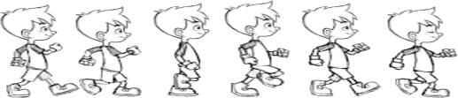

Animation is nothing but making a sequence of images or pictures look live!
Each successive image in the sequence differs from the previous one in little ways. Perhaps in the positions of limbs of a character,locations of things, or the look of a character
when such a sequence of images is seen in quick succession ,it looks like the character is moving , the various things in the scene are in motion, or the appearance of the character is changing.